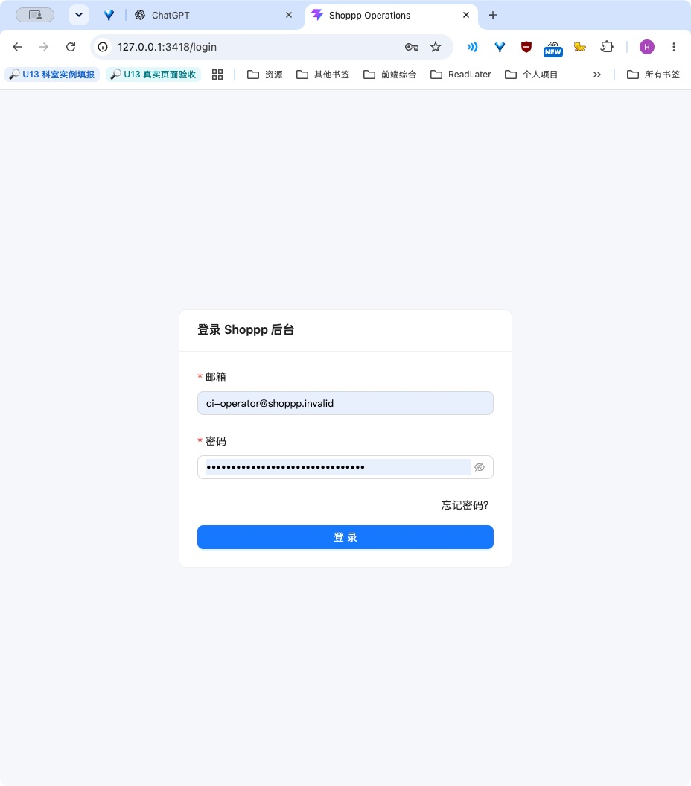
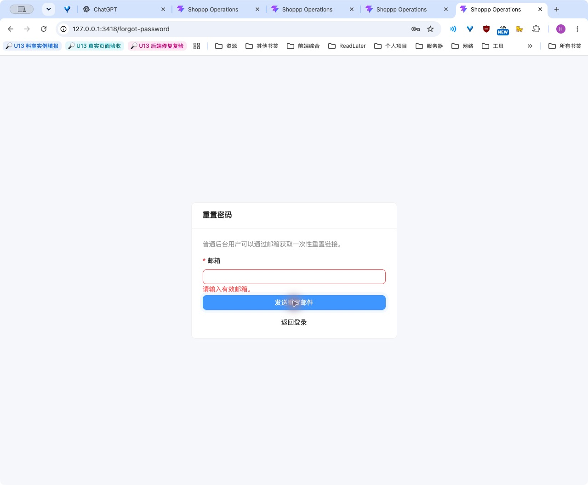
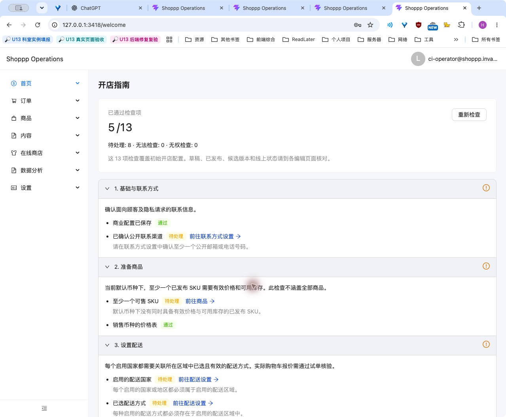
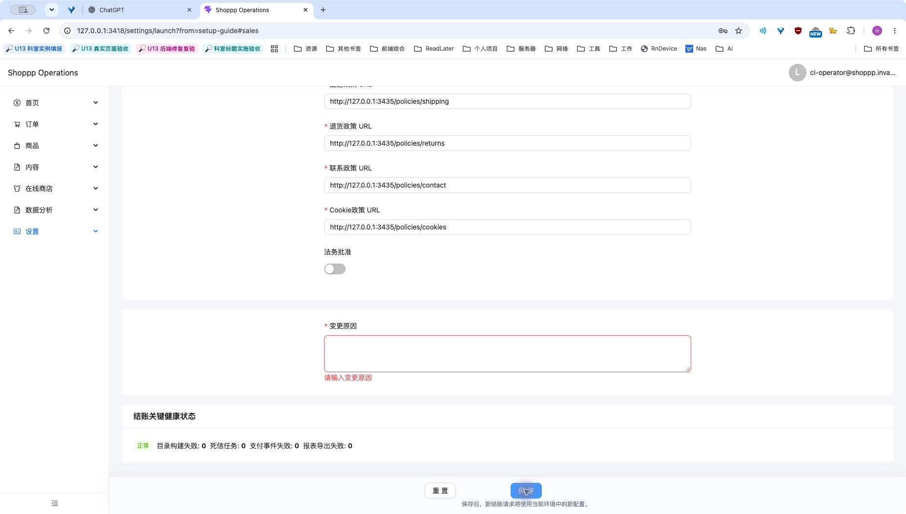
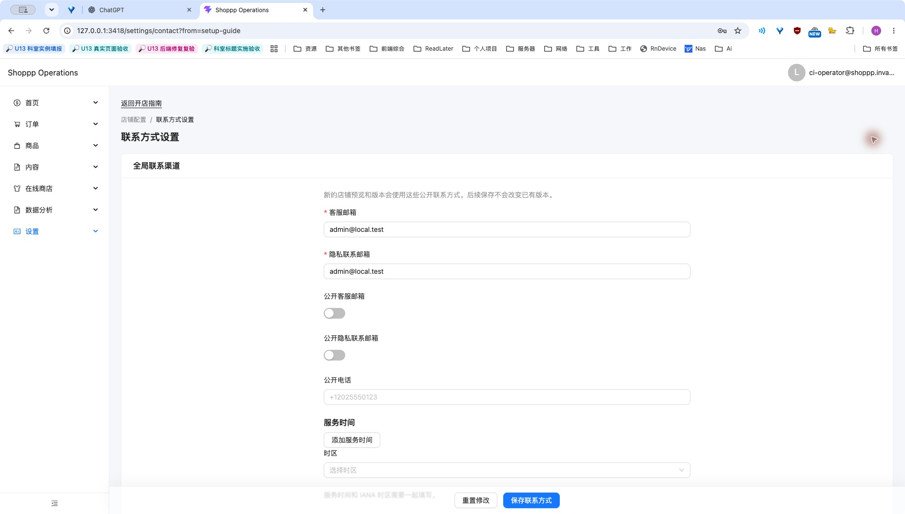

2026年10月31日—11月1日 · 本地测试环境 · 用户视角走查
后台的下一步，需要更清楚。
页面组件和基础布局相对统一。主要摩擦集中在任务衔接、保存后的对象身份、失败恢复，以及无数据时的下一步。
23菜单主入口已进入
73截图节点
25发现与建议
2P1任务阻塞
覆盖边界：已完成当前环境可执行的体验，未完成全链路业务验收。前台未运行，支付/Webhook凭证缺失，无已支付订单；真实支付、退款、履约及非空经营数据未验证。装修缺少已发布数据，未验证实际预览及正式发布。没有用模拟成功代替。
问题性质分类
原有“UX-”是稳定发现编号，不代表每条都是UX问题。以下按问题性质分组，保留原编号和P1/P2/P3优先级；分类与严重程度分别判断。功能逻辑包含前端状态、校验、路由和接口集成，不能据此推定为后端业务错误。是否需要写代码也不是UI与逻辑的划分标准。
UX-004未证实金额算错；UX-009涉及草稿/发布规则确认；UX-021不是已证实搜索算法失效；UX-012/013的业务根因待查。UX-019同时有日期布局问题与校验反馈问题；UX-024丢失的是未保存输入。
逐项分类与逻辑判断 ·
本次分类补充日期为2026-11-02，依据2026-10-31至11-01的现场证据；没有重新验证当前版本是否已修复。四组互斥计数，交叉项单列；分类不改变原先的证据强度与覆盖限制。
优先处理
P1：本轮核心任务阻塞；P2：明显摩擦或误导；P3：结构与细节建议。类型标签区分已确认问题、环境限制与建议，未把所有意见当作缺陷。
发现与具体建议
每项标题上方直接标明问题类型；下方说明具体问题及功能逻辑判断。P1／P2／P3单独表示优先级。
UX问题 · 功能根因待查
P1 · UX-012已确认阻塞，根因待查
本地商品发布失败，提示无法指导恢复
查看当前截图标注与目标效果 →
2026-11-06复核：仍存在
这是什么问题：UX已确认／功能根因待查。泛化失败提示和缺少恢复路径属于已确认UX问题。
功能逻辑判断：商品发布确实受阻；业务校验、配置、构建或服务错误的根因尚未确定，不能直接归为已确认业务逻辑bug。
复现路径与前提：在本轮本地环境，从测试商品列表打开发布，填写发布原因并提交；观察即时失败提示、对话框状态和列表草稿状态。尚无成功发布的对照。
实际现象：已创建测试商品，填写原因后发布失败，只短暂显示“请求失败，请稍后重试”，弹窗和草稿保留，后续库存也无法继续。
为什么改：核心商品到可售链路受阻。单靠提示无法区分业务校验、环境配置、构建或暂时服务错误，容易反复提交。
建议改成什么样：先查明此环境的实际发布失败原因；在对话框内持久展示可理解的原因、可执行修复路径和可复制请求编号；只在确实可重试时建议重试。
如何验收：当前测试商品可完成适用的发布流程，或明确列出尚未满足的前提；失败时原因留在现场、输入保留，重复提交受控。环境修复与产品体验修复分别记录。
功能逻辑 + UX问题
P1 · UX-020本地环境已确认问题
报表导出已就绪，但下载进入开店指南
查看当前截图标注与目标效果 →
2026-11-06复核：仍存在
这是什么问题：功能逻辑与UX交叉。已就绪导出的下载动作没有交付文件，而是进入SPA页面。
功能逻辑判断：已查证本地下载URL与dev代理路径不匹配；属于本地请求路由或集成问题，未验证生产同样受影响。
复现路径与前提：在收入报表以测试原因为空结果创建导出；等待显示0行已就绪，再点击下载链接，观察实际目的页与文件交付。
实际现象：点击0行导出下载链接后进入/welcome。只读查证链接为/admin/reporting/exports/.../download，而本地dev只代理/api；HEAD原链接返回text/html而非CSV。
为什么改：用户得到导出已完成的承诺，却拿不到文件；关键输出链路断裂。当前证据只证明本地环境，不据此断言生产也失败。
建议改成什么样：使用环境一致的API下载URL构建方式或同源代理，保留认证、授权和审计；下载错误应留在报表现场说明，不能落入SPA首页。
如何验收：本地测试点击下载得到有效CSV响应和预期行数，包含正确Content-Type/下载行为；会话失效等错误可恢复，生产路径单独验证。
UI问题 · 信息呈现
P2 · UX-002已确认问题
商家表单暴露内部资源标识和路由术语
查看当前截图标注与目标效果 →
2026-11-06复核：仍存在
这是什么问题：UI／信息呈现为主。重点是资源名称、标识和技术术语的可读性。
功能逻辑判断：未证明底层资源引用或存储错误；新增资源选择器可能需要配套功能实现。
复现路径与前提：分别进入商业设置、商品新建的价格/媒体区、文章新建封面区和导航编辑；尝试仅凭界面完成资源选择。
实际现象：商业设置展示长配送方式ID，商品展示媒体Key/价格表代码，文章写“封面媒体资源ID”，导航默认要求“系统路由/路由路径”。
为什么改：用户需要理解系统实现才能选择正确资源，跨页面对照长标识增加误选和跳转成本。
建议改成什么样：主要显示配送名称、封面缩略图、可读资源名称和常见页面选项；内部ID放在次要详情/复制入口。高级代码字段保留在有明确用途的区域，保留既有权限和资源审批规则。
如何验收：无需复制内部ID即可选择配送、封面和普通页面链接；必要时仍能查看原ID；提交的实际资源引用不变。
UX问题 · 操作流程
P2 · UX-003改进建议
地点抽屉和页面都叫“保存”，实际生效层级不同
查看当前截图标注与目标效果 →
2026-11-06复核：仍存在
这是什么问题：UX／流程设计为主。两层保存的实际作用没有通过动作名称清楚表达。
功能逻辑判断：未证明保存逻辑失效；不应仅为统一按钮名称而合并两层保存。
复现路径与前提：进入联系信息
/settings/contact，展开地点抽屉；对照抽屉说明、抽屉保存按钮和页面保存按钮。此项未实际新增地点。
实际现象：地点抽屉说明修改会回填草稿、保存页面后生效，但底部按钮仍叫“保存”。
为什么改：提示虽已解释，按钮动作仍容易让用户误认为地点已经持久保存并公开。
建议改成什么样：抽屉按钮改为“添加到联系信息”或“确认地点”，页面按钮保留“保存联系方式”；回填后在页面展示未保存状态。
如何验收：确认地点后能看见草稿变化及待保存状态；仅关闭页面不会被误认为地点已生效；最终页面保存后反馈明确。
UX问题 · 操作流程
P2 · UX-004已确认问题
价格以最小币种单位输入，配送条件缺少解释
查看当前截图标注与目标效果 →
2026-11-06复核：仍存在
这是什么问题：UX／流程设计为主。金额表达要求用户换算，配送条件的单位与适用性不清。
功能逻辑判断：未发现已保存金额计算错误。改用常用金额输入需要正确的币种精度转换，属于实现与回归要求。
复现路径与前提：打开配送区域新建表单，选择固定运费；再打开商品变体价格区，检查金额输入单位、免费阈值及重量条件的说明。
实际现象：商品和配送价格要求输入最小币种单位；配送固定运费同时显示免费阈值、重量上下限，部分字段没有清楚的金额单位与适用说明。
为什么改：用户必须自行把25美元换算为2500，容易出现数量级错误；不清楚哪些条件需要填写。
建议改成什么样：界面使用“USD
25.00”等通常金额表达，边界层按币种精度转换；保留内部整数合同。按计费方式显示相关条件，免费阈值明确币种、含义和留空效果。
如何验收：输入USD
25.00保存后对应2500最小单位；回显仍是25.00；不同计费方式只要求适用字段，不能把零值和未填写混淆。
UX问题 · 操作流程
P2 · UX-005已确认问题
普通保存成功还要关闭一个确认弹窗
查看当前截图标注与目标效果 →
2026-11-06复核：仍存在
这是什么问题：UX／流程设计为主。普通成功反馈增加了无决策价值的确认步骤。
功能逻辑判断：保存本身已成功；主要改变反馈方式和继续操作的流程。
复现路径与前提：在测试环境新建可识别的配送区域或商品集合并提交；观察成功后是否仍要关闭只有确认按钮的弹窗。
实际现象：配送区域与商品集合保存成功后，出现只有“确认”的阻断式弹窗。
为什么改：无后续决策的保存结果增加一次点击，连续维护数据时尤其打断节奏，也与其他页面的轻量保存反馈不一致。
建议改成什么样：普通成功使用现有轻量消息，并在列表显示保存记录；只有确需用户决策的发布、冲突或后续操作才使用弹窗。
如何验收：保存成功直接回到可继续操作的列表，结果可核对；键盘用户无需为普通成功多走一次确认。
功能逻辑 + UX问题
P2 · UX-006已确认问题
配送引导没有指向最终启用选择的位置
查看当前截图标注与目标效果 →
2026-11-06复核：仍存在
这是什么问题：功能逻辑与UX交叉。指南未通过项的行动入口没有衔接到实际启用选择字段。
功能逻辑判断：涉及引导任务与跳转目标的映射；未证明配送报价或启用规则本身错误。
复现路径与前提：创建有效US配送区域后返回指南，检查区域与已选配送方式的结果；点击未通过项入口，与商业设置的启用方式字段对照。
实际现象：新建US配送区域后，区域检查可通过，但“已选配送方式”仍未通过。指南继续链接配送设置，而实际已启用方式选择在商业设置。
为什么改：用户按提示反复回到已有配送区域，仍不知道如何完成启用和国家关联。
建议改成什么样：把任务拆成“创建区域/方式”和“选择店铺启用方式”；第二项直接定位商业设置对应字段，或在配送页提供明确的启用衔接入口。
如何验收：从指南的失败项可以到达实际修复位置；创建并启用完整配置后再检查，相关项结果准确。
UX问题 · 操作流程
P2 · UX-007已确认问题
必填店铺标志无可选资源时没有下一步
查看当前截图标注与目标效果 →
2026-11-06复核：仍存在
这是什么问题：UX／流程设计为主。必填资源为空时缺少素材准备与返回继续的路径。
功能逻辑判断：空资源是现场前置条件；未证明媒体接口或审批规则错误。
复现路径与前提：在缺少可用品牌媒体的环境进入店铺资料
/settings/identity；展开必填主标志选择器，寻找可执行的素材准备入口。
实际现象：主标志必填，下拉仅显示“暂无数据”，占位要求已批准的商品目录媒体，页面没有准备品牌素材的入口。
为什么改：首次开店用户无法完成店铺资料，也很难理解为何品牌标志必须先成为商品媒体。
建议改成什么样：沿用现有媒体审批合同，提供品牌素材的上传/选择路径；资源为空时解释前置条件并链接可实际操作的媒体准备入口，返回后保留已填店铺资料。
如何验收：空媒体库用户能从当前页知道并完成素材准备，回到资料页选择有效素材；不绕过审批或擅自放宽品牌合同。
UX问题 · 操作流程
P2 · UX-008已确认问题
多个空状态把首次无数据与筛选无结果混为一谈
查看当前截图标注与目标效果 →
2026-11-06复核：仍存在
这是什么问题：UX／流程设计为主。不同空状态共用不合适的说明和行动按钮。
功能逻辑判断：涉及状态呈现设计，未证明列表查询结果错误。
复现路径与前提：在空库且没有筛选条件时进入商品、订单或任务恢复列表；比较文案、中央按钮和页面级创建入口。
实际现象：没有商品/集合/订单/任务时，中央主要引导仍是重置筛选或重新加载；有的文案已经提到创建，但按钮未对应。
为什么改：初次使用没有筛选可重置，重复操作也无法得到数据；无失败任务本应是正常结果，却表达得像查询问题。
建议改成什么样：分别呈现首次空库、筛选无匹配、加载失败、无需处理任务。空商品库主按钮为创建商品；空任务说明当前无待处理任务；只有失败才提供重试。
如何验收：清空筛选、输入无匹配条件和模拟真实错误时能看到不同状态与对应行动，不用同一套空状态处理全部情况。
UX问题 · 操作流程
P2 · UX-009改进建议
商品初次创建的必填负担过重，缺少分阶段准备
查看当前截图标注与目标效果 →
2026-11-06复核：仍存在
这是什么问题：UX／流程设计为主。草稿阶段录入负担重，缺少分阶段准备和合理默认值。
功能逻辑判断：这是产品流程建议；放宽草稿必填项前需要核对草稿与发布合同，不能直接删除现有业务校验。
复现路径与前提：从商品列表打开新建，依次查看基本信息、变体、价格、媒体和SEO；对照集合/页面表单的SEO默认行为。
实际现象：创建商品需一次处理名称、标识、描述、SKU、变体、物流尺寸、最小单位价格、媒体元信息和SEO；集合和页面却允许SEO默认值。
为什么改：即使只想先存草稿也要完成较长录入，反复复制标题与描述，难以分清发布前必须完善的内容。
建议改成什么样：明确草稿保存与可发布校验的差别；在合同允许的范围内提供SKU、SEO等默认值，将物流/高级配置分组渐进填写；用完整性检查提示发布前缺口。
如何验收：用户能识别最小可保存内容及发布前必备内容；默认值可编辑；不能为了减少字段丢掉重量、金额、SEO或既有发布校验。
功能逻辑 + UX问题
P2 · UX-010已确认问题
上传图片后宽高仍是1200×1200默认值
查看当前截图标注与目标效果 →
2026-11-06复核：未完成复现
这是什么问题：功能逻辑与UX交叉。上传结果与图片尺寸字段没有同步。
功能逻辑判断：实际600×765图片上传后字段仍为1200×1200，需处理元数据派生或同步；未验证前台实际展示已经受影响。
复现路径与前提：在商品新建中上传仓库测试图
relaxed-corduroy-shirt.jpg（实际600×765）；上传完成后对照媒体Key和宽高字段。
实际现象：本轮上传600×765的现有商品图，媒体Key已自动填充，宽高仍为1200×1200。之后人工改为真实值。
为什么改：用户可能直接保存错误的图片比例元信息；要求人工识别像素尺寸也增加额外工作。
建议改成什么样：上传后从实际图片解码结果自动填写固有宽高，并将系统派生信息显示为摘要；如允许特殊展示尺寸，另用明确字段区分。
如何验收：上传非正方形图片后自动回显真实宽高，替换图片也同步更新，保存和预览不依赖用户手工修正。
功能逻辑 + UX问题
P2 · UX-011已确认问题
创建成功后仍显示新建标题和mode=add
查看当前截图标注与目标效果 →
2026-11-06复核：仍存在
这是什么问题：功能逻辑与UX交叉。创建后的对象身份、地址和页面模式没有一致切换。
功能逻辑判断：已确认保存后仍显示新建；未验证再次提交一定会重复创建，不能将重复记录写成既成事实。
复现路径与前提：填写有效测试商品并保存一次，观察提示、标题、地址和按钮；另进列表核对记录。页面草稿保存后也对照标题与版本状态。不要重复提交以免造重复数据。
实际现象：商品提示已创建后仍保留新建表单、值和保存按钮；手动进入列表才确认存在1条草稿。页面草稿虽出现版本状态，标题和地址也仍为新建。
为什么改：保存结果和当前对象身份不清，用户可能再次点击创建、关闭后难以回到同一对象；本轮没有重复提交验证产生第二条。
建议改成什么样：创建成功切换到带对象ID的编辑地址并更新标题，或明确返回列表；持续编辑应围绕同一个已保存对象。
如何验收：创建后能识别对象、状态和后续动作；再次保存更新同一对象，不再次发送创建；刷新可恢复正确详情。
UX问题 · 功能根因待查
P2 · UX-013已确认引导缺口，数据规则待查
新建SKU后库存页没有记录，也没有初始化路径
查看当前截图标注与目标效果 →
2026-11-06复核：仍存在
这是什么问题：UX已确认／功能根因待查。库存记录为空时缺少前置条件说明和继续操作入口。
功能逻辑判断：是否要求先发布、如何初始化库存仍待核对；未证明库存查询、记录生成或数量计算错误。
复现路径与前提：在商品草稿及SKU已创建、但发布未成功的前提下进入
/inventory；查找该SKU及可继续初始化库存的入口。当前不据此判定库存查询实现错误。
实际现象：商品草稿与SKU已创建，库存列表为空，没有新增库存/初始化入口，只让重置筛选。发布失败可能影响前置条件，尚未证明库存查询本身错误。
为什么改：用户不知道要先发布、初始化库存还是执行其他操作，无法从当前页面完成补库存。
建议改成什么样：说明库存记录出现的条件；沿用现有业务规则提供可执行的初始化或前置任务入口，并从商品页衔接对应SKU。
如何验收：新SKU用户能知道记录何时出现、去哪里设置初始数量；完成合法前置条件后可在同一SKU上调整并核对库存。
UI问题 · 信息呈现
P2 · UX-014已确认问题
同一功能的术语和界面语言不一致
查看当前截图标注与目标效果 →
2026-11-06复核：仍存在
这是什么问题：UI／信息呈现为主。同一业务概念名称不统一，中文界面混入英文系统提示。
功能逻辑判断：属于术语和国际化表达问题；未证明相应业务动作执行错误。
复现路径与前提：中文界面中对照商品系列菜单与集合页标题；新建测试集合后观察成功提示；退出后用一次无效密码检查登录错误语言。
实际现象：菜单“商品系列”对应页面“商品集合”；任务入口与标题叫法不同；中文界面出现Collection
created及英文登录错误。
为什么改：用户需要判断不同名称是否指同一能力，关键错误的理解门槛提高。
建议改成什么样：确定每个业务概念的统一名称，覆盖菜单、标题、按钮、成功和错误消息；系统内置文案提供中英版本，用户自填内容保持原文。
如何验收：同一对象在菜单、列表和编辑器同名；中文登录失败/集合保存提示为中文；切换英文后术语对应且未保存输入不丢失。
UX问题 · 操作流程
P2 · UX-016已确认引导缺口
装修预览无数据时缺少可执行的准备步骤
查看当前截图标注与目标效果 →
2026-11-06复核：部分存在
这是什么问题：UX／流程设计为主。无已发布数据时没有清楚衔接资源准备与返回预览。
功能逻辑判断：未发布数据是已知前置缺失；未证明有合法数据时预览仍不能工作。
复现路径与前提：在没有已发布商品数据的环境打开测试装修副本；查看预览区、商品资源选择器及其空状态恢复指引。
实际现象：没有已发布数据时预览为空，资源选择器禁用，只提示选择已发布数据；没有直接说明如何生成并关联这份数据。
为什么改：编辑器的大部分视觉价值无法使用，首次装修者不清楚该处理商品、集合、内容还是店铺版本。
建议改成什么样：在空预览处列出当前缺失的已发布资源和准备入口，保留草稿；若提供示例预览必须显式标为示例，不能冒充真实店铺。
如何验收：无资源时能看到真正前置条件与可访问入口；资源准备后可关联并看到实际预览；准备过程不丢当前装修草稿。
功能逻辑 + UX问题
P2 · UX-017已确认问题
装修已保存，发布区仍提示先保存或放弃修改
查看当前截图标注与目标效果 →
2026-11-06复核：仍存在
这是什么问题：功能逻辑与UX交叉。已保存状态与发布区要求先保存的提示互相矛盾。
功能逻辑判断：需要核对状态提示的显示条件；未证明后端发布门槛或权限判断错误。
复现路径与前提：在测试装修副本中修改标题并保存；确认保存/撤销按钮不再可用，再检查审核与发布面板的阻塞提示。
实际现象：修改保存成功，保存与撤销按钮已不可用；审核与发布面板仍显示“发布前，请先保存或放弃当前修改”，同时另有已发布资源缺失提示。
为什么改：用户被要求执行一个当前不能执行的动作，难以识别真正的发布阻塞。
建议改成什么样：按真实状态分别说明未保存、缺少发布数据、未审核和未批准等原因；无脏修改时不要显示保存要求，为每个可修复原因提供入口。
如何验收：已保存时不再要求保存；审核/发布仍保持必要门槛，禁用解释准确对应当前未满足条件。
UI问题 · 信息呈现
P2 · UX-018已确认问题
经营仪表盘无数据时几乎整页消失
查看当前截图标注与目标效果 →
2026-11-06复核：仍存在
这是什么问题：UI／信息呈现为主。无数据时页面框架、指标解释和下一步信息几乎全部消失。
功能逻辑判断：未证明经营统计接口、聚合或金额计算错误。
复现路径与前提：在无经营数据的环境进入
/dashboard；检查标题、范围、指标解释和下一步入口，再与收入报表的空结果对照。
实际现象：仪表盘只有“当前数据不足，暂时无法展示仪表盘”，没有标题、日期、指标说明或下一步。收入报表仍保留时间范围与查询上下文。
为什么改：首次开店者难以理解仪表盘用途，也无法区分尚无经营数据、数据尚未汇总和加载异常。
建议改成什么样：保留页面标题和适用筛选，逐项说明暂无数据及数据条件，提供开店/订单入口；未采集到的数据保持为空，不伪造零值和趋势。
如何验收：空店铺仍能理解指标用途和数据来源；正常零业绩、未采集和加载失败分别表达，后续有数据时自然进入同一框架。
功能逻辑 + UX问题
P2 · UX-019已确认问题
结束日期早于开始日期，被表现为列表加载失败
查看当前截图标注与目标效果 →
2026-11-06复核：仍存在
这是什么问题：功能逻辑与UX交叉。反向日期范围缺少明确校验反馈，错误被归因为加载失败。
功能逻辑判断：涉及输入校验与错误分类；后端可能已拒绝非法范围，需核对错误处理。起止日期分行是同项中的UI问题。
复现路径与前提：进入收入报表，将结束日期设为开始日期之前（现场为10月2日至10月1日）并查询；观察字段和结果区。随后重置恢复。
实际现象：开始10/2、结束10/1提交后，结果区显示请求失败并让重试，没有指出日期范围不合法。开始和结束字段还被分到两行。
为什么改：错误归因指向服务问题，用户重试无法解决；分离的日期布局加重比较成本。
建议改成什么样：把起止日期作为一组，提交前检查范围并在日期组旁显示“结束日期不能早于开始日期”；保留上次有效结果，修正后再查询。
如何验收：反向范围在界面得到明确提示，不产生伪装成加载故障的错误；合法范围可查询，重置可恢复默认范围。
UI问题 · 信息呈现
P2 · UX-022已确认问题
审计日志面向运营却依赖内部代码检索
查看当前截图标注与目标效果 →
2026-11-06复核：仍存在
这是什么问题：UI／信息呈现为主。审计操作、人和对象主要以内部代码展示，业务语义不易读。
功能逻辑判断：需要改善表达和筛选入口；未证明审计记录本身丢失或记错。
复现路径与前提：进入
/audit，查找本轮报表导出操作、操作人和目标；尝试凭可读业务名称理解记录和设置操作筛选。
实际现象：操作以report.export.create等代码显示，操作人只有identity-local-admin，目标是长ID；筛选要求精确操作名。
为什么改：运营人员难以快速回答谁对什么做了什么，也难以查到所需记录。
建议改成什么样：主位显示可读操作名、用户名称和目标摘要；保留原代码/ID及复制能力。操作筛选提供可搜索的业务选项，技术详情按需展开。
如何验收：无需预知英文操作代码即可筛选本轮导出；可定位到人和对象，同时可取得完整请求ID供技术排查。
功能逻辑 + UX问题
P2 · UX-023已确认问题
进入其他模块再返回会丢失审计筛选
查看当前截图标注与目标效果 →
2026-11-06复核：仍存在
这是什么问题：功能逻辑与UX交叉。跨模块返回没有恢复已经提交的审计筛选上下文。
功能逻辑判断：涉及路由与列表状态恢复；未证明后端筛选查询错误，跨刷新与分享URL的保留规则需定义。
复现路径与前提：在审计日志按 report.export.create
查询到1条；进入任务恢复，再使用浏览器后退，检查筛选与结果是否保留。
实际现象：审计按report.export.create筛到1条，进入任务恢复后用浏览器返回，筛选清空、全列表恢复。
为什么改：跨模块排查需要重复输入，容易忘记原来的定位范围，分页上下文也缺少可靠依据。
建议改成什么样：使用现有列表状态合同把已提交筛选和分页保留在URL或路由恢复状态，返回时恢复；重置按钮明确清空。
如何验收：相同步骤返回后筛选值、结果范围和适用页码恢复；刷新和分享URL的语义明确，不保留不该持久化的敏感查询。
功能逻辑 + UX问题
P2 · UX-024已确认问题
站内导航静默丢弃联系方式的未保存输入
查看当前截图标注与目标效果 →
2026-11-06复核：仍存在
这是什么问题：功能逻辑与UX交叉。存在未保存输入时，站内离开没有拦截或恢复机制。
功能逻辑判断：涉及脏状态与离开保护；本轮丢失的是未保存输入，不能称为已保存数据丢失或数据库写入失败。
复现路径与前提：联系信息中输入未保存测试号码；切换英语确认输入仍在，再点配送设置离开；返回联系信息检查值。测试号码没有保存。
实际现象：填写未保存测试号码，切换语言保留输入；点击配送设置直接离开，无确认；回到联系信息后号码为空。
为什么改：用户可能丢失一组已填写资料，跨页面查看前置条件时尤其容易产生重复劳动。
建议改成什么样：复用现有未保存修改保护：仅在存在真实脏值时提示继续编辑或放弃；保存成功后清除脏状态。不要创建页面全局焦点状态机。
如何验收：修改后站内离开可取消并保留输入，确认放弃才丢弃；未修改和已保存时不弹多余确认；语言切换继续保留输入。
UX问题 · 操作流程
P2 · UX-025改进建议
无效重置/激活链接缺少直接恢复指引
查看当前截图标注与目标效果 →
2026-11-06复核：仍存在
这是什么问题：UX／流程设计为主。无效重设或激活链接没有提供直接的下一步恢复路径。
功能逻辑判断：令牌缺失被正确拒绝；未发现令牌校验失效，也未测试有效令牌的完整流程。
复现路径与前提：退出后直接访问不带令牌的 /reset-password 与
/activate；观察无效链接说明与恢复入口。未输入新密码或使用真实激活令牌。
实际现象：没有令牌的重置和激活页明确报链接无效，但只提供返回登录。
为什么改：已经无法登录的用户仍要再找忘记密码；激活用户不知道应该重新申请还是联系邀请者。
建议改成什么样：重置错误直接提供“重新申请重置链接”；激活错误给出重新获取邀请的具体说明和适用入口，避免暴露账号是否存在。
如何验收：失效链接用户能在当前错误页找到正确恢复路径；不要求先尝试登录，不泄露身份存在性或绕过令牌验证。
UI问题 · 信息呈现
P3 · UX-001改进建议
开店指南展开全部阶段，下一任务不够突出
查看当前截图标注与目标效果 →
2026-11-06复核：仍存在
这是什么问题：UI／信息呈现为主。重点是开店指南的信息层级、密度和下一行动的突出程度。
功能逻辑判断：未证明开店检查的计算结果错误。
复现路径与前提：以测试管理员登录，进入开店指南
/welcome；从首屏寻找当前可执行的下一项任务，并向下查看完整检查清单。
实际现象：首次进入显示13项检查、6个默认展开阶段及额外事项，首屏只能看到前两三段。
为什么改：新商家需要先读大量说明，才能决定先完成哪一项；总通过数没有转化为明确的下一行动。
建议改成什么样：保留完整检查清单，顶部突出首个可完成任务及一个主按钮；默认展开当前阶段，已通过项和后续阶段可折叠；环境维护项标明负责人。
如何验收：首次进入能直接识别下一任务；展开其他阶段仍能查全全部检查；返回指南后当前阶段和检查结果一致。
UI问题 · 信息呈现
P3 · UX-015改进建议
装修入口的技术元信息压过商家决策信息
查看当前截图标注与目标效果 →
2026-11-06复核：部分存在
这是什么问题：UI／信息呈现为主。装修入口的技术元信息比商家的主要决策信息更突出。
功能逻辑判断：属于信息组织建议，未证明主题版本或发布数据错误。
复现路径与前提：进入主题与草稿列表
/storefront/themes；以商家视角辨认当前线上版本、测试草稿和下一步编辑入口。
实际现象：主题入口显示合约/架构版本、英文路由列表、Source
parity预设和ISO时间，而可见状态包括主题包、体验草稿、线上版本。
为什么改：商家需要先理解内部模型，才能回答正在编辑什么、哪些已上线。
建议改成什么样：用当前线上外观、可编辑草稿和下一动作组织主层级；时间本地化，主题预设配可读名称或缩略图，技术版本放到可展开详情。
如何验收：不读架构/合约信息也能找到当前线上版本及草稿；支持排查的版本信息仍可访问；没有把未验证草稿误称上线。
UX问题 · 操作流程
P3 · UX-021改进建议，已查证现有设计
权限搜索只高亮，结果可能在视口外
查看当前截图标注与目标效果 →
2026-11-06复核：仍存在
这是什么问题：UX／流程设计为主。高亮式搜索缺少可见匹配数量和定位反馈。
功能逻辑判断：已查证组件采用高亮设计，不能称为搜索匹配算法失效。
复现路径与前提：进入角色管理，查看Analyst权限树，搜索“报表”；检查可见匹配、数量和定位反馈。未提交任何权限变更。
实际现象：搜索“报表”后仍显示全部权限组，没有可见结果数量或自动定位。代码确认filterTreeNode用于高亮而非过滤，匹配逻辑包含中文标签。
为什么改：用户看起来像搜索没有生效，仍需长距离滚动找下方高亮项；不能称为搜索算法失效。
建议改成什么样：明确“高亮匹配”语义并显示匹配数量、上一/下一结果，或提供仅显示匹配项的视图；沿用组件树键盘与勾选合同，不重新实现权限交互。
如何验收：搜索后当前视口能确认找到多少项并到达匹配项；清空搜索后勾选状态不变，搜索本身不改变权限。
值得保留
- 商业设置的错误定位与字段提示。
- 开店指南返回入口、自动复核和人工检查边界。
- 页面SEO默认值、草稿版本和后续发布入口。
- 导航树与详情联动，保存草稿和发布区分。
- 切换语言保留未保存输入，代表表单/表格深色可读。
- 自身账号保护有说明，用户Drawer用Escape关闭后恢复触发按钮焦点。
- 报表导出说明、有效期和持久完成状态。
完整操作节点与截图
按任务分组，组内保持实际顺序。点击展开查看每个节点；点击图片打开原图。后补登录检查仍归属U2。每张均来自本轮实际操作。
U2 · 登录、退出与恢复 7个节点
N001 · 登录初始 顺畅
2026-10-31 23:44:02 +08:00 · /login
已有浏览器自动填充，尚未提交。

现场观察，无正式发现编号
N002 · 登录后进入开店指南 有摩擦
2026-10-31 23:44:02 +08:00 · /welcome
测试账号登录成功，进入开店指南。当前3/13项通过，商业、商品、配送、支付等尚未完成；支付凭证和Webhook明确缺失。各阶段默认全部展开，需要向下滚动识别任务。
UX-001
N068 · 无效密码登录反馈 有摩擦
2026-11-01 00:08:50 +08:00 · /login
一次无效密码登录被拒绝，错误以持久区域展示，但中文界面错误内容为英文“The email or password
is incorrect.”。后续用既有凭证重新登录成功，未改密、未锁定账号。
UX-014
N069 · 密码找回的必填校验 顺畅
2026-11-01 00:09:10 +08:00 · /forgot-password
密码找回说明一次性邮件链接，空提交在邮箱处提示必填。没有向任何真实收件人发送邮件，也未修改凭证；当前环境未配置可用邮件接收流程，邮件送达和重设完成未验证。

现场观察，无正式发现编号
N070 · 缺少重设令牌的恢复页 有摩擦
2026-11-01 00:09:23 +08:00 · /reset-password
无令牌的重设入口明确显示“重置链接无效”，只提供返回登录；没有重新申请重置链接的直接入口。未输入新密码或修改凭证。
UX-025
N071 · 缺少激活令牌的恢复页 有摩擦
2026-11-01 00:09:34 +08:00 · /activate
无令牌激活页给出无效链接提示。重设页只提供返回登录，建议在失效重设场景增加“重新申请重置链接”，减少绕行；激活需要联系邀请者时也应说明。
UX-025
N072 · 既有凭证重新登录成功 顺畅
2026-11-01 00:09:57 +08:00 · /welcome
一次错误登录后，用原测试凭证重新登录成功，账号未锁定；会话已恢复。开店检查5/13，测试配送已停用，未公开测试内容。

现场观察，无正式发现编号
U3 · 开店与基础设置 14个节点
N003 · 商业设置首屏 有摩擦
2026-10-31 23:44:52 +08:00 · /settings/launch?from=setup-guide#sales
从引导可返回原指南，表单主次清晰。但商家需要选择“已启用的配送方式
ID”，值为长内部标识，无法直接辨识配送服务。
UX-002, UX-006
N004 · 商业设置必填校验 顺畅
2026-10-31 23:45:04 +08:00 · /settings/launch?from=setup-guide#sales
空变更原因提交后，页面滚动并聚焦错误字段，给出明确提示。本图拍摄底部校验区域；支付模式与凭证另由页面可访问文本核对。

现场观察，无正式发现编号
N005 · 联系方式表单 顺畅
2026-10-31 23:45:17 +08:00 · /settings/contact?from=setup-guide
联系方式按全局渠道、地点、社交链接分组，公开开关与邮箱区分明确，提示版本保存语义。以测试电话验证保存与恢复。

现场观察，无正式发现编号
N006 · 联系方式保存成功 顺畅
2026-10-31 23:45:32 +08:00 · /settings/contact?from=setup-guide
测试号码已通过界面保存；成功反馈说明已保存并记录审计日志。下一步恢复原空值。
现场观察，无正式发现编号
N007 · 地点抽屉与两层保存 有摩擦
2026-10-31 23:45:52 +08:00 · /settings/contact?from=setup-guide
抽屉顶部明确提示“保存页面后才生效”，但底部仍叫“保存”，与页面保存同词。建议改成“添加到草稿/确认地点”，减少误以为已经生效的风险。测试未输入内容，随后关闭。
UX-003
N008 · 配送空状态 顺畅
2026-10-31 23:46:18 +08:00 · /settings/shipping?from=setup-guide
没有配送区域时给出“新建配送区域”，但空白中央的次级行动是“重新加载”；新建入口仍可见。此环境没有可用配送配置。
UX-008
N009 · 新建配送区域：金额与条件 有摩擦
2026-10-31 23:46:35 +08:00 · /settings/shipping?from=setup-guide
配送表单直接使用“价格（最小单位）”，要求商家换算分/美元；固定运费模式仍展示免费阈值和重量上下限，字段条件不易理解。
UX-004
N010 · 配送保存后的阻断式成功提示 有摩擦
2026-10-31 23:47:00 +08:00 · /settings/shipping?from=setup-guide
保存配送区域成功后出现必须确认的居中弹窗；普通保存结果增加额外确认，打断继续配置。建议沿用轻量成功提示，直接回到列表并突出新记录。
UX-005, UX-006
N011 · 指南中的配送与支付缺口 有摩擦
2026-10-31 23:47:28 +08:00 · /welcome
新建配送区域后，国家检查通过，但“已选配送方式”仍未通过且只链接配送设置；实际启用选择位于商业设置。支付缺少服务商和Webhook凭证，明确属于环境前置条件。
UX-001
N012 · 店铺资料首屏 有摩擦
2026-10-31 23:47:43 +08:00 · /settings/identity?from=setup-guide
店铺名称、品牌标语、SEO和素材分组；本图为首屏，下方素材空选择的直接证据在N014。
UX-007
N013 · 品牌素材区域 有摩擦
2026-10-31 23:47:56 +08:00 · /settings/identity?from=setup-guide
滚动到品牌素材；必填主标志只能选择已批准的商品目录媒体。该图尚未展开下拉，实际空列表见N014。
现场观察，无正式发现编号
N014 · 标志选择器明确无数据 受阻
2026-10-31 23:48:08 +08:00 · /settings/identity?from=setup-guide
下拉实际展开后只显示“暂无数据”，没有素材上传、资源库入口或准备步骤。此图确认为 UX-007
的直接现场证据。
UX-007
N015 · 政策编辑起点 顺畅
2026-10-31 23:48:25 +08:00 · /settings/policies
政策记录与编辑区实际上下排列。空库可直接新建草稿，需填写类型、标题、标识、生效日期与结构化内容。本轮只检查编辑及校验，未保存政策或做法务审批。
现场观察，无正式发现编号
N016 · 政策必填校验 顺畅
2026-10-31 23:48:35 +08:00 · /settings/policies
空政策提交后各必填项逐项给出错误，并聚焦首个类型选择器。政策记录和编辑区实际为上下排列。尚未写入政策。
现场观察，无正式发现编号
U4 · 商品、库存与评价 14个节点
N017 · 商品列表空状态 有摩擦
2026-10-31 23:49:08 +08:00 · /catalog/products
当前没有商品。搜索与状态筛选清晰；空状态同时提到重置筛选和创建商品，但中央只提供重置筛选。真正首次进入的空库可更直接引导“创建第一个商品”。
UX-008
N018 · 新建商品表单与新标签页 有摩擦
2026-10-31 23:49:28 +08:00 · /catalog/products/form?mode=add
新建商品打开独立浏览器标签。基础信息与变体、价格、媒体、SEO均在同一长表单；物流尺寸、价格表代码、SEO都在初次创建时必填，首轮录入负担较重。
UX-009
N019 · 商品变体价格区域 有摩擦
2026-10-31 23:49:43 +08:00 · /catalog/products/form?mode=add
变体需填写SKU、标题、重量和三维尺寸，金额使用最小币种单位。建议在界面显示可理解的币种金额，并为物流数据和默认价格表提供渐进填写。
UX-004, UX-009
N020 · 商品媒体和SEO区域 有摩擦
2026-10-31 23:50:09 +08:00 · /catalog/products/form?mode=add
上传图片前暴露必填媒体Key、图片宽高和SEO信息。媒体Key为只读，上传后是否自动补齐继续验证；建议系统生成信息收起或显示为摘要，SEO提供合理默认值。
UX-002, UX-009
N021 · 图片上传后仍保留默认尺寸 有摩擦
2026-10-31 23:50:35 +08:00 · /catalog/products/form?mode=add
上传已有600×765图片后，媒体Key自动填充，但宽高仍为默认1200×1200（原图尺寸通过本地元数据核对）。需要人工修正，容易保存不真实的图片尺寸。
UX-010
N022 · 商品保存后仍停留在新建模式 有摩擦
2026-10-31 23:50:48 +08:00 · /catalog/products/form?mode=add
收到“商品已创建”反馈后，页面仍为mode=add，保留填写内容和保存按钮，没有切换为编辑或结果页。没有再次提交；手动进入列表确认仅创建1条。
UX-010, UX-011
N023 · 已创建商品在列表可见 有摩擦
2026-10-31 23:51:08 +08:00 · /catalog/products
手动进入列表后确认只创建1条草稿，名称和标识正确；创建后的界面没有自动切换为编辑或结果页，UX-011以SS022与本图组成前后证据。
UX-011, UX-013
N024 · 商品发布确认 顺畅
2026-10-31 23:51:20 +08:00 · /catalog/products
发布前说明会构建公开店铺版本，部署后更新展示，并要求发布原因。此确认符合业务变更性质；与普通保存成功的额外确认应区分。
UX-012
N025 · 商品发布第一次尝试后的弹窗 受阻
2026-10-31 23:51:34 +08:00 · /catalog/products
填写发布原因并提交后，弹窗仍保留、列表为草稿。此图不能证明发布成功；随后即时捕获到失败提示，见N026。
现场观察，无正式发现编号
N026 · 商品发布失败只给泛化提示 受阻
2026-10-31 23:52:04 +08:00 · /catalog/products
即时截图显示顶部“请求失败，请稍后重试”，没有具体原因或恢复路径；弹窗保留，列表仍为草稿。几次点击用于确认操作是否生效，随后停止，不声称已发布。
UX-012
N027 · 新建商品后的库存空状态 受阻
2026-10-31 23:52:42 +08:00 · /inventory
商品已创建且包含SKU，但库存列表没有记录，也没有新增库存或去准备SKU的入口，只提示重置筛选。当前无法通过此页继续补库存；是否要求先发布需查证，界面未解释。
UX-012, UX-013
N028 · 商品集合抽屉 有摩擦
2026-10-31 23:53:00 +08:00 · /catalog/collections
集合以抽屉编辑，SEO标题可留空并使用名称，降低创建成本；与商品强制填写SEO的体验不一致。导航叫“商品系列”，页面叫“商品集合”，建议统一术语。
UX-009, UX-014
N029 · 商品集合保存结果 有摩擦
2026-10-31 23:53:11 +08:00 · /catalog/collections
新建集合成功，但中文界面显示英文“Collection
created”，且再次要求确认成功弹窗。与配送成功弹窗归为共性反馈问题。
UX-005, UX-014
N030 · 评价审核空状态 顺畅
2026-10-31 23:53:35 +08:00 · /catalog/reviews
无待审核评价，空状态解释与任务相符。当前无评价数据，审核动作未验证。
现场观察，无正式发现编号
U5 · 内容与导航 6个节点
N031 · 页面编辑起点 顺畅
2026-10-31 23:53:54 +08:00 · /content/pages/form?mode=add
页面标识、正文和搜索展示分组清晰，SEO可用标题默认值。正文需逐块添加，继续体验段落编辑、保存和返回。
现场观察，无正式发现编号
N032 · 页面草稿保存后的发布入口 顺畅
2026-10-31 23:54:11 +08:00 · /content/pages/form?mode=add
段落内容保存成功，界面出现“状态与发布”、草稿v1与发布入口，SEO标题默认采用内容标题。这种保存后状态比商品新建更清楚。
UX-011
N033 · 页面草稿状态与发布控件 有摩擦
2026-10-31 23:54:19 +08:00 · /content/pages/form?mode=add
已保存草稿显示
v1、版本详情和发布/归档入口；保存后仍显示“新建页面”标题，建议随已创建状态切换标题及稳定详情地址，避免身份含糊。
UX-011
N034 · 文章编辑与校验 有摩擦
2026-10-31 23:54:37 +08:00 · /content/articles/form?mode=add
文章编辑复用页面结构，额外封面字段仍叫“媒体资源
ID”。空提交可聚焦标题并给出字段错误。本轮没有保存文章；正文保存已在页面任务验证。
UX-002
N035 · 导航树与菜单详情 有摩擦
2026-10-31 23:54:59 +08:00 · /storefront/navigation
添加菜单项后，左侧树选中与右侧详情联动。默认“系统路由”要求手工填路由路径；资源选择需切换目标类型。草稿与发布区分明确。
UX-002
N036 · 导航草稿保存成功 顺畅
2026-10-31 23:55:14 +08:00 · /storefront/navigation
页头菜单已保存为草稿，树标签与状态同步，发布和归档入口出现；尚未发布，不影响已有店面版本。
现场观察，无正式发现编号
U6 · 店铺装修 4个节点
N037 · 主题与体验草稿入口 有摩擦
2026-10-31 23:55:51 +08:00 · /storefront/themes
主页面把主题包、体验草稿和线上版本放在一起。首屏含合约/架构版本、英文预设和ISO时间，信息偏技术化；商家需要辨认“主题包/体验草稿/线上版本”的关系。
UX-015
N038 · 装修编辑器无预览数据 受阻
2026-10-31 23:56:12 +08:00 · /storefront/themes/draft-f7ff874a-0bc0-46fc-b2f3-6f8c6b058e9f
复制草稿成功，三栏编辑器可见；没有已发布数据时，中央预览为空，集合/商品选择器禁用，英文空提示。界面没有直接可执行的“准备预览数据”步骤，编辑者难以恢复。
UX-016
N039 · 装修修改保存成功 顺畅
2026-10-31 23:56:31 +08:00 · /storefront/themes/draft-f7ff874a-0bc0-46fc-b2f3-6f8c6b058e9f
测试副本内容已保存，“保存装修”和撤销回到不可用状态，字段保留新值。没有可用预览数据，无法评价修改后的店面视觉效果。
UX-016, UX-017
N040 · 已保存装修仍提示先保存 有摩擦
2026-10-31 23:56:42 +08:00 · /storefront/themes/draft-f7ff874a-0bc0-46fc-b2f3-6f8c6b058e9f
已保存且保存按钮不可用，审核页却提示“发布前，请先保存或放弃当前修改”。同时缺少已发布资源，多个禁用原因混在一起；建议逐项说明真正阻塞与可点击修复步骤。
UX-017
U7 · 支付前置、订单与履约 3个节点
N041 · 订单列表与支付筛选 有摩擦
2026-10-31 23:57:25 +08:00 · /orders
当前订单库为空，支付/履约筛选可见，未能进入详情、取消、退款或履约。空状态只称“没有符合筛选条件”，没有区分尚无订单与筛选无结果。
UX-008
N042 · 履约空状态 顺畅
2026-10-31 23:57:37 +08:00 · /fulfillment
空状态明确解释只展示等待履约的已支付订单。由于支付前置条件缺失及无订单，具体履约与退款步骤受阻，不作为已验证流程。
现场观察，无正式发现编号
N043 · 测试前台未运行 受阻
2026-10-31 23:57:49 +08:00 · http://127.0.0.1:3435/
配置中的前台127.0.0.1:3435拒绝连接；加上支付服务商和Webhook凭证缺失，当前无法完成真实下单支付闭环。本地dev:fashion-store使用独立商品fixture，不能代替当前后台的真实闭环，因此不把它启动后的模拟结果算作通过。
现场观察，无正式发现编号
U8 · 仪表盘与收入报表 6个节点
N044 · 仪表盘缺少数据时的整页空状态 有摩擦
2026-10-31 23:58:11 +08:00 · /dashboard
经营仪表盘仅显示“当前数据不足，暂时无法展示仪表盘”，未保留日期/指标框架，也不解释缺少什么数据或下一步。首次开店时无法建立指标认知。
UX-018
N045 · 收入报表筛选与无事件状态 顺畅
2026-10-31 23:58:46 +08:00 · /reports/orders
报表明确展示币种、时区及日期范围，空状态说明是该时间段无订单事件，比仪表盘更有上下文。当前为10/2–10/31、Asia/Shanghai。
UX-018, UX-019
N046 · 反向日期范围变成列表加载失败 有摩擦
2026-10-31 23:59:19 +08:00 · /reports/orders
用键盘确实把结束日期改为10月1日，早于开始日期10月2日，然后查询。字段未提示范围错误，结果区显示“列表加载失败/请求失败，请稍后重试”。初次加载中截图已由本图稳定错误现场替换。重置后恢复正常。
UX-019
N047 · 报表导出说明 顺畅
2026-11-01 00:00:08 +08:00 · /reports/orders
导出前说明含客户邮箱、审计与24小时链接有效期，并要求原因；说明对操作后果有帮助。本轮空订单数据，不包含真实客户信息。
现场观察，无正式发现编号
N048 · 报表导出就绪 顺畅
2026-11-01 00:00:21 +08:00 · /reports/orders
导出完成后有持久“已就绪”状态和0行下载链接，明确结果；无需重复发起导出。导出ID以系统标识显示，可将可读文件名/时间范围放在主位。
UX-020
N049 · 下载报表却回到开店指南 受阻
2026-11-01 00:00:37 +08:00 ·
/admin/reporting/exports/rex_afdc79b16c264617b83584a64b5da5d1/download → /welcome
从“下载导出文件（0行）”点击后，未见下载结果，浏览器进入/welcome开店指南。下载链接为/admin/reporting/exports/.../download，需核对前端代理和后端下载路由；当前导出交付受阻。
UX-006, UX-020
U9 · 权限、隐私与任务恢复 9个节点
N050 · 用户列表 顺畅
2026-11-01 00:01:06 +08:00 · /access/users
用户与邀请分标签，角色、启用状态和查看入口明确。当前只有本地管理员，不改动其角色或启用状态；测试查看、邀请表单及校验。
现场观察，无正式发现编号
N051 · 邀请表单必填校验 顺畅
2026-11-01 00:01:23 +08:00 · /access/users
空提交给出邮箱与角色错误，没有发出邀请。普通表单清楚、字段少；当前仅一个管理员且没有受控收件箱，邀请实际送达与受限角色登录未验证。
现场观察，无正式发现编号
N052 · 自身账号保护与只读详情 顺畅
2026-11-01 00:01:45 +08:00 · /access/users
自身账号角色/状态不可编辑，底部解释原因；只读资料分组可见。禁用显示名称是否符合产品权限需另行确认，本轮不将其当作缺陷。
现场观察，无正式发现编号
N053 · 角色权限编辑树 有摩擦
2026-11-01 00:02:20 +08:00 · /access/roles
角色详情提供分组、选中数量、全选/展开/收起及搜索。默认39个权限全部展开，长抽屉滚动成本高；搜索适合定位，但可考虑默认仅展开已选组。
UX-021
N054 · 权限搜索未定位到可见结果 有摩擦
2026-11-01 00:02:30 +08:00 · /access/roles
输入“报表”后仍显示商品、库存、订单等组，匹配项在当前视口之外，没有计数或定位。只读代码查证该控件设计为高亮匹配而非过滤；本条建议改善反馈，不将其称为搜索接口失效。没有变更权限。
UX-021
N055 · 隐私请求录入与验证 顺畅
2026-11-01 00:03:09 +08:00 · /privacy
记录请求前明确要求核验申请人身份；空提交给出主体邮箱、请求类型和原因的必填错误。没有创建或执行实际隐私请求，真实客户数据流程未验证。
现场观察，无正式发现编号
N056 · 审计日志核对本轮写入 有摩擦
2026-11-01 00:03:27 +08:00 · /audit
日志能核对商品、集合、页面、导航、主题和导出操作；未见本轮角色权限写入。操作名、操作人和目标均以内部标识展示，筛选要求“精确操作名”，日常运营难直接理解或查找。
UX-022
N057 · 审计筛选成功 有摩擦
2026-11-01 00:03:40 +08:00 · /audit
输入已知操作名后筛选出本轮导出记录，功能有效；普通用户须先知道英文精确操作名，建议可搜索的业务操作选项并保留原始代码供排查。
UX-022, UX-023
N058 · 自动任务恢复空状态 有摩擦
2026-11-01 00:03:51 +08:00 · /operations/jobs
没有可恢复任务，空状态仅建议重置筛选，无法区分“系统正常无失败”与“无匹配结果”。未执行任务重放；菜单“自动任务恢复”、标题“自动化恢复”可统一。
UX-008, UX-014
U10 · 跨页面、主题、语言与缩放 9个节点
N059 · 浏览器返回后审计筛选丢失 有摩擦
2026-11-01 00:03:58 +08:00 · /audit
先在审计页筛选
report.export.create，只剩1条；进入自动任务恢复后用浏览器返回，筛选字段变空、全部日志重新出现。截图SS057与本图组成前后证据。
UX-023
N060 · 审计页200%缩放 顺畅
2026-11-01 00:04:30 +08:00 · /audit
Chrome确认缩放200%。侧栏自动收起，筛选入口可操作，数据表需要横向滚动；表格允许二维阅读，本轮不将其自动判为可访问性失败。
现场观察，无正式发现编号
N061 · 约1440宽桌面布局 顺畅
2026-11-01 00:05:00 +08:00 · /audit
通过原生拖动窗口调整到约1440宽（截图1441×1055）。审计表保持最小列宽并横向溢出，主要筛选仍可操作；截图包含浏览器工具栏，不把它称为精确1440×900内容视口。
现场观察，无正式发现编号
N062 · 约1280宽深色主题 顺畅
2026-11-01 00:05:20 +08:00 · /audit
窗口缩窄至约1280宽后切换深色，筛选、状态和表格可读，未见本页主题错色；表格需横向滚动。侧栏仍占224px，数据区域较紧，但不是无法操作。
现场观察，无正式发现编号
N063 · 窄桌面深色表单 顺畅
2026-11-01 00:05:44 +08:00 · /settings/contact
联系表单在约1280宽深色下可读，固定保存栏可见，公开开关状态明确。本轮最初测试电话已为空，恢复值再次得到核对。
现场观察，无正式发现编号
N064 · 切换英文保留未保存输入 顺畅
2026-11-01 00:06:06 +08:00 · /settings/contact
在公开电话输入未保存测试值后切换English，页面标签变为英文，电话输入保留。后续放弃该未保存值，不写入业务配置。
UX-024
N065 · 未保存表单离开时没有提醒 有摩擦
2026-11-01 00:06:30 +08:00 · /settings/shipping
联系方式中有未保存测试号码，点击Shipping
settings直接导航成功，没有询问保留或放弃。下一步返回核对输入是否丢失。
UX-024
N066 · 返回联系方式后未保存号码消失 有摩擦
2026-11-01 00:06:38 +08:00 · /settings/contact
返回联系方式，公开电话恢复空值；先前未保存号码未恢复。SS064→SS065→SS066确认站内导航静默丢失编辑内容。
UX-024
N073 · 未知路由的实际恢复行为 顺畅
2026-11-01 00:10:11 +08:00 · /audit-route-does-not-exist → /welcome
访问不存在的后台路径后自动进入/welcome，没有出现独立404提示。记录该实际行为供路由设计复核；不将其自动视作必须修改的问题。
现场观察，无正式发现编号
U11 · 测试数据处置 1个节点
N067 · 测试配送已停用 顺畅
2026-11-01 00:08:20 +08:00 · /settings/shipping
本轮创建的audit-20261031区域已设为关闭并保存，不再作为有效配送区域。保留测试记录以便复现截图；商业设置的原配送选择未改动。中文与浅色已恢复。
现场观察，无正式发现编号
覆盖清单与不能证明的部分
| 任务 |
覆盖 |
限制 |
经营仪表盘
/dashboard |
仅查看 |
数据不足，未展示指标与日期控件，不能验证指标和趋势 |
开店指南
/welcome |
已操作 |
已进入设置、返回并观察检查变化；未通过全部开店检查 |
订单列表
/orders |
已操作/详情受阻 |
无订单；支付和履约筛选入口可见，订单详情与交易操作未验证 |
订单详情、取消、退款
/orders/:reference |
受阻 |
无订单且缺少支付/回调配置；未伪造成功支付订单 |
发货与履约
/fulfillment |
仅查看/受阻 |
没有等待履约的已支付订单；未执行履约 |
商品列表
/catalog/products |
已操作 |
创建、列表核对和业务发布尝试；发布失败，未验证成功发布 |
商品创建、图片上传
/catalog/products/form |
已操作 |
创建成功；保存后mode=add问题已取证，未深测后续复杂变体修改 |
商品集合列表及抽屉
/catalog/collections |
已操作 |
新建草稿成功；未添加已发布成员、发布集合或验证复杂排序 |
集合兼容独立URL
/catalog/collections/form |
未覆盖 |
当前入口使用Drawer；独立兼容URL未另测 |
库存调整
/inventory |
受阻 |
已创建SKU但无库存记录和初始化入口；未执行数量调整 |
评价审核
/catalog/reviews |
仅查看/受阻 |
无待审核评价，未执行审核 |
页面列表
/content/pages |
已操作 |
从列表新建并保存草稿；独立发布及归档未操作 |
页面正文编辑
/content/pages/form |
已操作 |
标题、标识、段落、默认SEO、草稿v1与发布状态区 |
文章列表
/content/articles |
已操作 |
进入列表并打开新建；未保存文章 |
文章编辑
/content/articles/form |
已操作（表单/校验） |
封面与正文结构、空提交校验；实际保存与发布未验证 |
页头/页脚导航
/storefront/navigation |
已操作（页头） |
页头添加标签并保存草稿；页脚编辑、子项重排、发布未覆盖 |
主题与草稿列表
/storefront/themes |
已操作 |
复制已有草稿创建测试副本；未移除原稿 |
装修编辑器
/storefront/themes/:draftId |
已操作/预览受阻 |
测试副本修改和保存；无已发布数据，预览视觉、正式审核发布及回滚未验证 |
收入报表
/reports/orders |
已操作/下载受阻 |
日期反向校验、重置、0行CSV导出就绪、下载跳转问题；非空报表口径未验证 |
店铺身份
/settings/identity |
已操作/保存受阻 |
必填品牌媒体无资源，未保存身份 |
联系方式
/settings/contact |
已操作 |
测试电话保存与恢复、地点抽屉、语言切换、未保存离开；未新增地点或服务时间 |
商业设置
/settings/launch |
已操作（查看/校验） |
配送启用ID、支付模式和凭证缺失、变更原因校验；未改变商业配置 |
配送设置
/settings/shipping |
已操作 |
创建US测试区域，收尾已关闭；商业启用选择未改变，实际购物车报价未验证 |
政策
/settings/policies |
已操作（表单/校验） |
编辑结构与必填校验；未保存、法务批准或发布 |
用户与邀请
/access/users |
已操作（查看/校验） |
用户详情、自身保护、邀请空提交；未发送邀请、未变更账号权限或状态 |
用户兼容独立详情URL
/access/users/:id |
未覆盖 |
当前入口通过Drawer完成查看；独立URL未另测 |
角色与权限
/access/roles |
已操作（查看/搜索） |
系统角色详情及搜索；无角色/权限写入，未用受限账号登录 |
角色兼容独立详情URL
/access/roles/:id |
未覆盖 |
当前入口为Drawer；独立URL未另测 |
隐私请求
/privacy |
已操作（表单/校验） |
空请求校验；未验证真实主体、导出或删除数据 |
审计日志
/audit |
已操作 |
查看本轮回执、精确操作筛选、浏览器返回丢筛选、主题与宽度 |
任务恢复
/operations/jobs |
仅查看/受阻 |
无测试失败任务，重试/重放执行结果未验证 |
未知路由
* |
已操作 |
输入不存在地址后回到welcome，未显示独立404页 |
登录/退出
/login |
已操作 |
正常登录、退出、一次错误密码、原凭证重新登录；未执行改密 |
密码找回
/forgot-password |
已操作（表单/校验） |
空邮箱校验；没有受控邮件链路，邮件送达未验证 |
重设入口
/reset-password |
已操作（无效链接） |
无令牌错误状态；未输入新密码，完整重设未验证 |
账号激活入口
/activate |
已操作（无效链接） |
无令牌错误状态；有效邀请激活未验证 |
前台支付闭环
127.0.0.1:3435 |
受阻 |
拒绝连接；支付和Webhook密钥缺失。未完成下单支付、退款和对账 |
语言、主题、缩放、焦点、离开
跨页面 |
已操作（代表页面） |
约1440/1280宽、200%缩放、深色表格/表单、中英切换、Escape回焦；不是全量输入模式/读屏审计
|
环境与方法：本地Admin3418、API8787、Wrangler本地D1。运行版本含既有未提交改动，不等同纯HEAD。应用内浏览器被设置禁用，改用原生Chrome操作。主轮中文浅色1856宽；补查约1440/1280宽和200%缩放，截图包含浏览器工具栏。
结论限制：不是正式Candidate/DC/PG验证；没有完整读屏、对比度数值测量、手机端及所有角色/数据/主题组合审计。受限账号登录、完整邮件恢复、任务重放及多项发布流程尚未验证。
数据恢复与交付